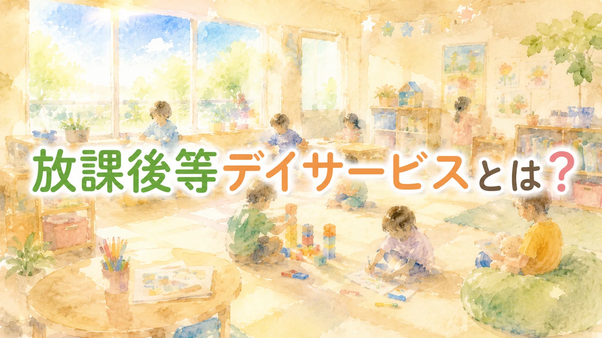

「放課後等デイサービスって、結局“預かり”でしょ？」
そう言われることがあります。
学校が終わったあとに子どもが行く。
送迎がある。
夕方まで過ごす。
保護者が仕事をしている間の助けにもなる。
そう考えると、たしかに「預かり」に見える部分はあります。
でも、放課後等デイサービスをそれだけで見てしまうと、大事な部分が抜け落ちます。
先に、この記事の結論
放課後等デイサービスには、たしかに「預かり」の面があります。でも、それだけではありません。療育、居場所、家族支援、学校とのつながりが重なった支援です。
問うべきは「預かりか、療育か」ではありません。その時間が、子どもと家庭にとって意味のある支援になっているか。そこです。
目次
まず、放課後等デイサービスとは何か
放課後等デイサービスは、主に学校に通っている障害のある子どもや、発達に支援が必要な子どもが利用する福祉サービスです。児童福祉法にもとづく制度として位置づけられています。
利用するのは、放課後、休日、長期休みなどです。
学校が終わったあとに事業所へ行き、活動をしたり、休んだり、友達や職員と関わったりして過ごします。
事業所によって内容はかなり違います。
運動を中心にするところ。
学習支援をするところ。
遊びや生活経験を大切にするところ。
ソーシャルスキルを扱うところ。
重い障害や医療的ケアのある子どもを受け入れるところ。
外出活動や余暇支援を行うところ。
一口に放課後等デイサービスと言っても、実際にはかなり幅があります。
だから、外から見ると分かりにくい。その分かりにくさが、「結局、預かりなのでは？」という疑問につながっているのだと思います。
“預かり”の役割は、たしかにある
最初に、ここは正直に書きます。
放課後等デイサービスには、預かりの役割があります。
保護者が仕事を続けるため。
きょうだいの世話や通院、家事をするため。
家庭だけで放課後を支える負担を少し軽くするため。
子どもが安全に過ごせる場所を確保するため。
こうした意味で、放課後等デイサービスが家庭を支えているのは事実です。
「預かり」という言葉には、少し低く見る響きがあります。でも、安心して預けられる場所があることは、決して小さなことではありません。
特に、障害のある子どもや発達に支援が必要な子どもの場合、放課後を家庭だけで支えるのは簡単ではありません。
学校から帰ってきたあと、疲れが一気に出る子もいます。
切り替えが難しい子もいます。
兄弟姉妹との関係が荒れることもあります。
保護者がずっと見守り続けなければならない家庭もあります。
そうした家庭にとって、安心して過ごせる場があることは、生活の土台になります。
だから、「預かりの役割がある」こと自体は悪くありません。問題は、そこだけで終わってしまうことです。
ただ預かるだけなら、支援とは言いにくい
放課後等デイサービスが本当に問われるのは、ここからです。
子どもが来る。
時間まで過ごす。
おやつを食べる。
遊ぶ。
帰る。
もちろん、これも大切な時間です。
けれど、ただ安全に時間を過ごすだけで、子どもの困り感や育ちに目が向いていないなら、それは福祉サービスとしては弱い。
放課後等デイサービスは、子どもの生活や発達を支える場所です。
その子が何に困っているのか。
どの場面で参加しづらいのか。
友達との関わりで何につまずくのか。
気持ちの切り替えにどんな支援が必要なのか。
家庭や学校でどんな困りごとが起きているのか。
そこを見ながら関わる必要があります。
「預かり」と「支援」の違いは、活動が派手かどうかではありません。イベントが多いかどうかでも、教材が立派かどうかでもありません。
その子を見ているか。
その子の困り感に合わせて関わっているか。
その時間が、その子の生活につながっているか。
そこが大事です。
療育とは、特別な訓練だけではない
放課後等デイサービスの説明で、「療育」という言葉が使われることがあります。
ただ、この言葉も少し誤解されやすい。
療育というと、机に座って訓練する、専門的なプログラムを受ける、何かをできるようにする、というイメージを持つ人もいるかもしれません。
もちろん、そうした支援が必要な子もいます。でも、療育はそれだけではありません。
たとえば、次のようなことも、子どもにとっては大事な学びです。
- 順番を待つ
- 自分の気持ちを伝える
- 嫌なときに別の方法で表現する
- 友達との距離を学ぶ
- 予定の変更に少しずつ慣れる
- 遊びの中で体を動かす
- 失敗してももう一度やってみる
- 疲れたときに休む方法を知る
大人から見ると、ただ遊んでいるように見えることがあります。
でも、その遊びの中で、子どもは人との距離、順番、気持ちの切り替え、ルール、身体の使い方を学んでいます。
放課後等デイサービスの支援は、生活の中にあります。だから、見た目が「遊び」でも、その中に支援の意図があるかどうかが大事です。
制度の話を、少しだけ
こども家庭庁の放課後等デイサービスガイドラインは、令和6年7月に改訂されています。本人への支援に加えて、家族支援、移行支援、地域支援・地域連携も重要な視点として整理されています。
令和6年度の報酬改定関連資料でも、「健康・生活」「運動・感覚」「認知・行動」「言語・コミュニケーション」「人間関係・社会性」という5つの領域を見わたした支援や、個別支援計画・支援プログラムの整理が示されています。
子どもにとっての「居場所」という意味
もう一つ大切なのは、居場所としての役割です。
学校で一日がんばってきた子どもにとって、放課後は「さらに訓練する時間」だけではありません。
少し力を抜ける場所。
自分を分かってくれる大人がいる場所。
失敗してもやり直せる場所。
学校とは違う人間関係を持てる場所。
家族以外の人に受け止めてもらえる場所。
こうした意味があります。
特別支援教育の現場にいると、子どもは学校でかなりがんばっていると感じることがあります。
授業中、座っている。
指示を聞く。
周りに合わせる。
友達との関係に気を使う。
苦手な音や刺激をがまんする。
分からなくても分かったふりをする。
学校では何とか過ごしていても、帰宅後に崩れる子もいます。
そういう子にとって、放課後等デイサービスが「もう一つの安心できる場所」になる意味は大きい。
そして、子ども本人が「行きたい」「ここなら落ち着く」と思えているかどうか。年齢や発達に応じて、本人の気持ちや意見が大事にされること。これも、見えにくいけれど大切な視点です。
ただし、居場所という言葉も注意が必要です。
居場所だから何もしなくていい、ということではありません。安心して過ごせること。そのうえで、少しずつ人や活動とつながっていくこと。この両方が必要です。
家族支援としての役割
放課後等デイサービスは、子どもだけを支えているわけではありません。保護者も支えています。
保護者は、家庭の中で子どもの困りごとを毎日見ています。
朝の準備が進まない。
宿題で荒れる。
きょうだいげんかが増える。
学校でがんばった反動が家で出る。
寝るまでの流れが整わない。
将来のことが不安になる。
こうした困りごとは、外からは見えにくい。
放課後等デイサービスの職員が、子どもの様子を共有したり、保護者の話を聞いたりすることで、保護者が少し楽になることがあります。
「うちだけじゃないんだ」
「こういう関わり方もあるんだ」
「今日は少し落ち着いて過ごせたんだ」
「学校以外にも見てくれる人がいるんだ」
そう思えるだけでも、家庭の孤立は少しやわらぎます。
もちろん、放課後等デイサービスが家庭のすべてを解決できるわけではありません。
医療、学校、相談支援、行政、場合によっては児童相談所など、いろいろな機関との連携が必要なこともあります。
それでも、保護者にとって、日常的に子どもを見てくれる支援者がいることは大きい。
放課後等デイサービスは、子どもの支援であると同時に、家族支援でもあります。
学校とのつながりが弱いと、支援は切れやすい
放課後等デイサービスは、学校生活と切り離して考えることはできません。
子どもは、学校で一日を過ごしたあとに利用します。
学校で何があったのか。
授業でどんな困りごとがあるのか。
友達関係で何につまずいているのか。
給食、着替え、移動、休み時間でどんな支援が必要なのか。
こうした情報が分からないままだと、放課後の支援もずれやすくなります。
逆に、放課後等デイサービスで見えた子どもの姿が、学校にとって大事なヒントになることもあります。
学校では話さない子が、デイではよく話す。
学校では参加しにくい子が、少人数だと活動できる。
学校では問題行動に見えることが、デイでは疲れや不安のサインとして見える。
家庭では荒れている子が、デイでは落ち着ける時間を持てている。
こうした情報は、学校・家庭・事業所が共有してこそ意味を持ちます。
もちろん、個人情報の扱いには注意が必要です。保護者の同意なく、何でも共有してよいわけではありません。
それでも、子どもを中心にして、家庭、学校、放課後等デイサービスがゆるやかにつながることは、とても大切です。支援は、場所ごとにバラバラだと弱くなります。
よい事業所を見るときの視点
では、保護者はどのように事業所を見ればよいのでしょうか。
完璧な事業所を探すのは難しいです。どの事業所にも得意不得意があります。子どもとの相性もあります。人員体制や地域事情もあります。
それでも、見学や相談のときに、こんなことを聞いてみると、その事業所の姿勢が見えてきます。
見学のときに、聞いてみたい質問
- うちの子の様子を、どんなふうに見ていますか？
- この活動には、どんなねらいがありますか？
- 家庭への共有は、どのくらいありますか？
- 個別支援計画は、うちの子に合わせてどう作りますか？
- 困った行動があったとき、どう関わりますか？
- 学校や相談支援とは、どんなふうに連携していますか？
- 支援プログラムを見せてもらえますか？
最後の「支援プログラム」について少し補足します。
いまは、5つの領域とのつながりを示した支援プログラムを作り、公表することが事業所に求められています。だから、「見せてください」と聞くのは、特別なことではありません。
反対に、少し気になる言い方もあります。
少し立ち止まって、確かめてよいサイン
決めつけるためのものではありません。気になったら、理由をたずねてみる、くらいの目安です。
- 「うちは何でもできます」と説明される
- 子どもの困り感より、利用日数を勧められているように感じる
- 活動の中身やねらいが見えにくい
- 「学校のことは学校で」と、連携に消極的に見える
- 「問題行動は厳しく直す」と、行動の背景を見ていないように聞こえる
もちろん、言葉だけで決めつけることはできません。
ただ、子どもの困り感より利用日数を優先しているように見える場合や、支援の中身が見えない場合は、少し立ち止まってよいと思います。
「預かり」と「療育」を対立させなくていい
ここまで書いてきたように、放課後等デイサービスにはいくつもの役割があります。
安全に過ごす。
家族を支える。
子どもが安心できる居場所になる。
生活や人との関わりを学ぶ。
学校や家庭とつながる。
だから、「預かりか、療育か」と二つに分けすぎない方がよいと思います。
預かりの安心があるから、保護者は生活を続けられます。
居場所があるから、子どもは少し力を抜けます。
療育の視点があるから、その時間が子どもの育ちにつながります。
家族支援があるから、家庭だけで抱え込まなくて済みます。
学校との連携があるから、支援が日常生活につながります。
大事なのは、どれか一つではありません。
その子にとって、今どの役割が必要なのか。
家庭にとって、何が支えになるのか。
学校生活とどうつながるのか。
そこを見ながら考えることです。
最後に
放課後等デイサービスは本当に“預かり”なのか。
私の答えは、こうです。
預かりの面はあります。でも、それだけではありません。そして、預かりの面があること自体を低く見なくていい。
安心して過ごせる場所があること。
保護者が少し息をつけること。
家庭だけでは見えない子どもの姿を、別の大人が見てくれること。
それは、支援の大事な一部です。
ただし、そこで止まってしまってはいけません。
子どもの困り感を見ているか。
本人の安心につながっているか。
生活や学校につながっているか。
保護者を孤立させていないか。
支援の中身を説明できるか。
本当に問うべきなのは、「預かりかどうか」ではありません。
その時間が、子どもと家庭にとって意味のある支援になっているか。
そこなのだと思います。
補足
利用にあたっての受給者証の取り方、料金の目安、適切な利用回数の考え方は、別記事「放課後等デイサービスって何？悩んでいる保護者のための最初の一歩」で整理しています。
ご注意
この記事は一般的な情報提供を目的としたものです。個別の利用可否、支援内容、利用日数、費用、事業所の体制は、自治体や事業所によって異なります。実際の利用や契約は、お住まいの市区町村窓口、相談支援専門員、各事業所に確認してください。